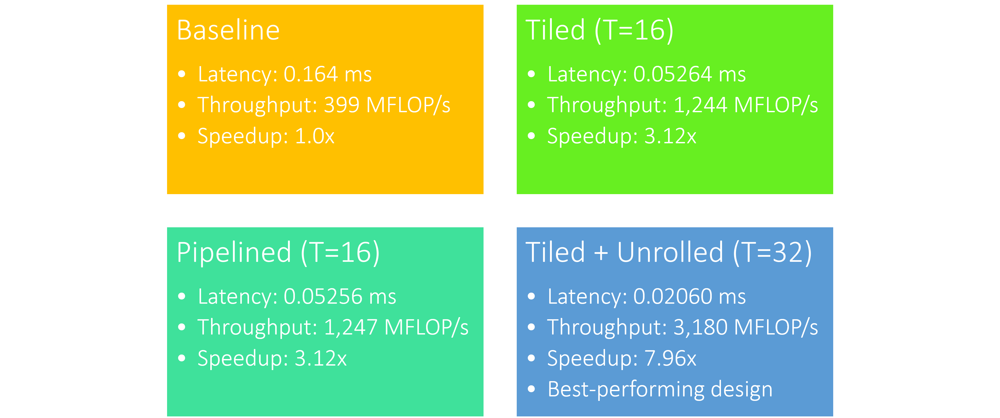
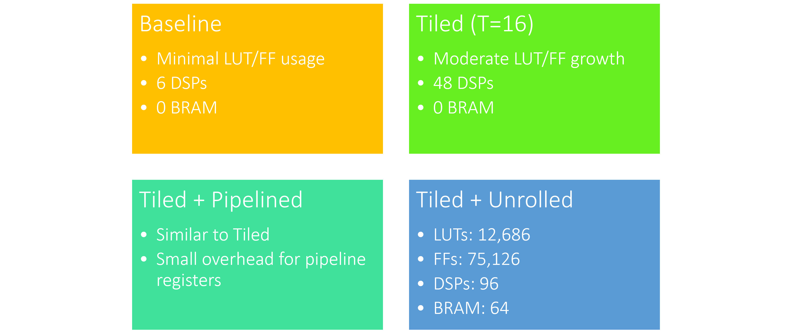
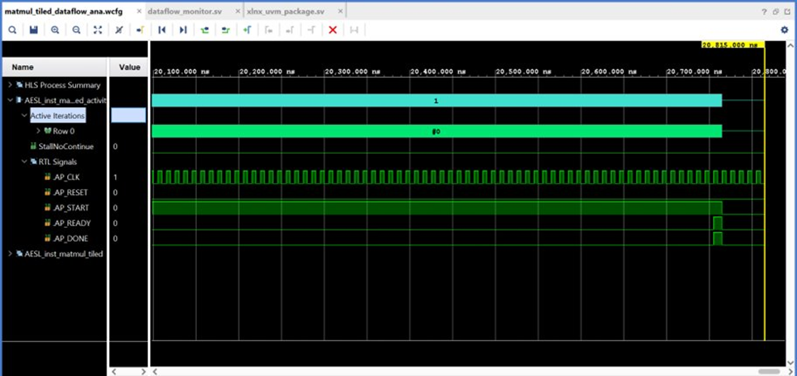

← Back to Projects
FPGA-Based Matrix
FPGA-Based Matrix
Multiplication Accelerator
AI Hardware Project · Jan 2026 – May 2026 · KSU ECE
AI Hardware Project · Jan 2026 – May 2026 · KSU ECE
Matrix Size
32 × 32
Design Flow
HLS → RTL → Bitstream
Optimization
Pipelining + Loop Unrolling
Resources Analyzed
LUTs · DSPs · BRAM
Focus
Throughput vs. Power
Goal
Energy-Efficient AI HW
This project implements a 32×32 integer/fixed-point matrix multiplication accelerator on an FPGA using High-Level Synthesis (HLS). The design targets energy-efficient compute architectures relevant to AI inference workloads — the kind of hardware that powers neural network layers at the edge.
The accelerator was synthesized using Xilinx Vitis HLS and analyzed in Vivado for resource utilization and power consumption, exploring the fundamental trade-off between throughput (II, latency) and hardware resources (LUTs, DSPs, BRAM).
#pragma HLS PIPELINE and #pragma HLS UNROLL
to the inner loop, achieving an initiation interval (II) of 1 for the innermost computation.
Performance Results (N=32, 100MHz Clock)

HLS synthesis / resource report

Simulation waveform output
This project gave me hands-on experience with the full HLS-to-bitstream design flow — from C++ algorithm to synthesized hardware. I gained intuition for how loop transformations translate to hardware resource usage, and why the DSP/BRAM balance matters for real AI inference workloads. This directly maps to roles doing FPGA-based AI acceleration, which is my primary career target.